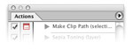
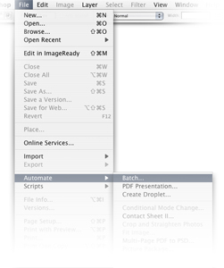

Color Efex Pro 3.0 supports Actions and Batch Processing, as well as Droplets.
All of the settings that were used when the filter was saved in the action will be applied when the Action, Batch Process, or Droplet is used.
To begin, create an Action with the filter that you wish to apply in the Action, Batch Process, or Droplet. To create an Action, follow these steps below:
1. Open an existing file.
2. Open the Actions palette within Photoshop. If the actions palette is not visible within Photoshop, navigate to the Window menu and select Actions.
3. Click on the Create New Action button located in the bottom row of buttons of the Actions Palette.
4. Name the Action according to the filter that you wish to apply as an Action, Batch Process, or Droplet, and click Record.
5. Navigate to the Filters menu of Photoshop, and select the filter.
6. Adjust the sliders and controls within the filter, and click OK.
Please note: Any Control Points used while creating an action will not be saved as part of the action settings. The adjustment will be applied to the entire image instead.
7. Stop the action by clicking on the Square button located in the bottom row of buttons of the Actions Palette.
To start a Batch Process of a folder of images, navigate to the File > Automate menu and select Batch. Before beginning this process, it is recommended that you create a new folder on your desktop labeled with the action name and the word “Processed.” For Example: “Pro Contrast Filter Processed.” This folder will contain all of the images once the action has been applied to them.
To start the Batch Process, follow
these steps:
1. Ensure that the action that was created earlier is indicated in the Action pull-down menu. If the correct action is not indicated, click on the pull-down menu and select the correct action.
2. Under source, indicate folder, and then click Choose. Navigate to the folder that contains all of the images that you want to apply the Batch Process to.
3. Under Destination, select Folder. Click Choose and navigate to the folder that was created on your desktop earlier. For example, navigate to the “Pro Contrast Filter Processed” folder.
4. Click OK.
The Batch Process will now begin and apply the filter from the
Action to all of the images in the folder, and save a new copy
of the image with the filter applied to the folder that was created
on the desktop.
Note: When batch processing with Color Efex Pro 3.0,
the filter effect is not applied to a separate layer. To apply Color Efex
Pro 3.0 to a separate layer while recording the action, duplicate the
layer prior to applying Color Efex Pro 3.0. This ensures that the batch
process includes a new filtered layer for each image.